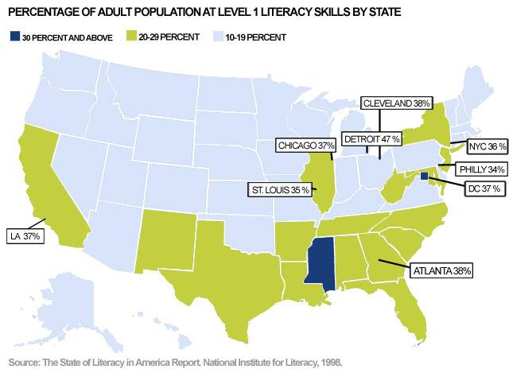

Introduction
IntroductionIntroduction
On Wednesday at noon, twenty three students from across Bay Ridge streamed into the Beit Al-Maqdis Mosque in Brooklyn. They were a strikingly diverse group – some newly married and some middle-aged, some Yemeni and some Moroccan, some niqab clad and some colourful hijab wearing – all tied together by one common theme: their desire to learn English. The room was filled with a hum of excitement. After all, this would be the first time that most of these students would be taking a subway ride without an accompanying family member. Led by Lisa Vogl, an ESOL instructor, and me, the field trip onto the subway was the culmination of an almost month-long transportation unit for Level Zero ESOL learners that had worked on building literacy skills crucial for navigation.
This course catered to the needs of a particularly underserved section of adult ESOL learners. None of the students had even a basic minimum level of written or oral English proficiency, most of the students had limited or non-existent written Arabic proficiency, and all of the students were women of colour. Set amidst warehouses and barber shops, the mosque was a unique institution that served as both a place of worship and as a community center for these students (who were a part of a large Arab-American community in the area). Held in a large room divided into sections by movable screens, ESOL courses here allowed students to negotiate their space within a linguistically hegemonic American society. As they acquired English skills, they were also working towards diverse goals that ranged from opening a restaurant to studying at university.
Navigating Illiteracy is a culmination of the insights derived from my interactions with students undertaking the transportation unit: it begins with an examination of how literacy hampers everyday tasks like navigation, continues to demonstrate the challenges of adult illiteracy in New York City, and moves towards understanding how individuals currently navigate without literacy. Finally, Navigating Illiteracy attempts to provide an additional resource for educators seeking to improve navigational literacy by freely providing the syllabus of the transportation unit created for this ESOL class. Moreover, the project uses key takeaways from the responses of the class to this unit to theorise upon the nature of navigational literacy and the semiotics of mapping while delving into the political dimensions of adult illiteracy in New York City.
Illiteracy in New York City

Illiteracy is not a niche phenomenon in American cities. The 1992 National Adult Literacy Survey demonstrated that over 36% of individuals in New York City have lower than Level 1 proficiency in English – which means that they cannot write a simple sentence or locate an intersection on a street map. Level 1 proficiency indicates that a New Yorker can sign their own name, match words across texts, and recognize simple, literal information. Literacy levels are even lower in foreign-born New Yorkers: according to the 2011 American Community Survey, over 74.8% of Chinese-born residents and over 82.1% Mexican-born residents lack basic English proficiency. This lack of literacy is intimately correlated with a lack of employment, lower levels in income, higher instances of poverty, and greater rates of incarceration. These effects indicate that illiteracy is not only a social disadvantage but a significant handicap and requiring the treatment of illiterate populations as vulnerable minority communities.
While illiteracy has been well documented and theorized upon, efforts to mitigate adult illiteracy in American cities have been meager and insufficient. A dire shortage of funds, exacerbated by recent cuts that nearly halved spending in New York City (from $15.8 million in 2015 to $9.2 million in 2017), combined with a shortage of ESOL instructors has resulted in a large proportion of those who need literacy services being denied access. Literacy New York, a non-profit targeting adult literacy, estimates that only 10% of those who want literacy services are being served. Approximately 2 million New Yorkers need literacy services, but nationally, there is only funding for 2.3 million individuals. Moreover, the scattered locations of ESOL courses results in fewer individuals being able to access what meager literacy services are offered in the city.
Existing literacy programs are poorly staffed and those working at these programs are severely underpaid: only 14% of the 10,486 instructors in literacy programs statewide are full-time paid employees according to the Literacy Assistance Center. The irregularity of funding also means that courses often operate for short windows of time; this fact, combined with the absence of a uniform syllabus for adult literacy courses, often means that those who have been attending these courses are left in the lurch when they shut down. Moreover, adult literacy courses are plagued by issues that do not affect young learners, such as infrequent attendance, low retention rates, a wide range of literacy levels. These factors, combined with high levels of stigma attached to adult education, make the issue of adult illiteracy one that needs targeted policy interventions and robust pedagogical support.
Navigating Illiteracy
Understanding the impact of illiteracy on the negotiation of everyday tasks requires a consideration of the deeply textualised nature of modern cities. New York, for instance, functions entirely on words and symbols: from the subway to the bus, from street markers to storefronts, all forms of individual engagement with the city are mediated through text. Navigation, therefore, requires multiple forms of literacy: it is not merely enough to be able to read text because this text is accompanied by a vast repertoire of signs that necessitate advanced semiotic literacy too. Situating yourself in an environment that is text dense when you are illiterate can be incredibly alienating. The image below shows how signs with their language changed can be rendered completely incomprehensible, especially within the complex New York City subway ecosystem:
For individuals who are English illiterate, navigating a sign like the one above can be challenging because of its incredible complexity. Even basic literacy, defined as an understanding of numbers or letters, can only get one so far: knowing whether there will be an R train or an N train on the platform (or whether there will be a train on the platform at all) requires a parsing through of the time and the location mentioned on the sign. The very fact that exceptions - and there are many exceptions on the New York City subway - are processed and conveyed through text highlights the dependence of the system on the presence of a literate commuter. When illiteracy is coupled with little to no English proficiency, like it is for most of the ESOL class at the Masjid, the New York City subway becomes an actively hostile environment.
Maps and their Semiotics
This hostile environment is a byproduct of the dependence of the subway system on maps, which are not always intuitive representations of spatial relationships and require multiple forms of literacy to parse. Maps can be defined as diagrammatic representations of space that give us an insight into the features of an area. However, the nature of their representation – which is often seen a falsely objective and scientific – needs to be questioned when one sees maps in their historical context and within the confines of contemporary social and political realities. Here, I will use J. B. Harley’s Deconstructing the Map alongside the works of C. S. Peirce and Roland Barthes to argue that the semiotics of maps create a complex network of signs and symbols that allow us to understand the map as a myth. Lastly, I will use observations from the Conflict Urbanism: Language Justice course to make the claim that mapmaking and the proliferation of maps privileges certain forms of literacy over others and tangibly affects our perception of space.
To begin with, it is important to turn to Harley’s critique of mapmaking as a form of representation. Arguing that maps play into structures of power and inherently value one form of knowing over another, Harley uses Foucault and Derrida to put forth the notion of a discourse of cartography that allows for and prohibits certain forms of knowledge. The construction of a scientific epistemology of mapmaking, which promotes European standards of mapmaking as authentic and objective standards, is cloaked by an image of the neutrality of the map. However, understanding the map as a textualised entity that is subject to the same forces of mythmaking enables the use of Roland Barthes’ understanding of the signifier and the signified to define maps as entities that are rooted in language but refer to concepts that go beyond the realm of language.
This, when combined with C. S. Pierce’s understanding of semeiotics as a field that describes the relationship between a triadic force of objects, representamens, and interpretants, transforms the map into a potent tool that creates – within itself – a nexus of signs, symbols, and relationships. Therefore, the map is not merely constituted by but also constitutive of these signs and symbols. This is the argument made by Denis Wood and John Fels in their Designs on Signs/Myth and Meaning in Maps: they draw out two categories, those of intrasignificant codes and extrasignificant codes, to describe the ‘repertoire of representational conventions’ within a map and the cultural contexts that transform entire maps into ‘vehicles for social and political expression’. I want to mobilise these arguments to make the claim that maps, by diagrammatically representing concepts like distance, create cognitive structures that transform our experience of navigation.
I make this claim through an analysis of a simple question raised by a student over the course of our field trip on the subway: how could the R train go both to Brooklyn and Manhattan, in opposite directions? This question revealed the extent to which mapping and spatial representation of data impacts our perception of directions and navigation. What appears as an obvious response stressing the bilateral direction of movement is actually predicated upon a knowledge of line maps that configure travel along lines as a bilateral process. This predication of knowledge made accessible by an insight into maps to understand the contents of a map is a classic example of how maps create and perpetuate their own logics – logics that must be introduced through the development of multiple levels and forms of literacy when working with adult ESOL learners.
Transportation Module
Given that the New York City subway depends upon a comprehension of maps that require multiple layers of literacy to comprehend, it is imperative to construct pedagogical methods that draw from a variety of skill-building resources to enable individuals to navigate independently in the city. This part of the project, therefore, contains a three week long transportation module for adult ESOL learners with little to no English proficiency developed by Lisa Vogl with minor suggestions and feedback being offered by me. An emphasis is placed upon transportation because of its strong connections to the allied disadvantages attached to illiteracy - namely employment, poverty, and income inequality. Moreover, transportation is a major provider of agency; through the ability to navigate surroundings independently, individuals gain the ability to actively work towards changing their social and political roles within their communities.
There is also an emphasis on the length of the course: given the low retention rate in adult ESOL courses, the rapid turnover of courses due to low availability of funding, and the differing levels of English proficiency within the classroom, we believe that shorter and self-contained modules present a more robust form of adult ESOL education than longer, more hierarchical structures. Lastly, the compilation of this syllabus itself is an attempt to argue for standardisation in coursework to ensure that low retention rates within adult ESOL learners do not hamper their ability to pick up from where they left off after long periods of absence.
Week One
The first week is aimed at familiarizing students with the varied modes of transportation and the words used to commonly describe them. This is accompanied by exercises that allow students to answer basic personal questions about their name, their address, and the city they live in. Lastly, there is a New York City focus on introducing the various boroughs that constitute the city and an attempt to understand the commuting needs of the class so that future weeks can be more tailored to their experiences.
Download Course Material for Week OneWeek Two
The second week aims at building vocabulary related to navigation and travel. This involves learning of verbs associated with each form of transportation, with an emphasis on the subway. Moreover, this is the week where students are introduced to line maps or strip maps – which are essential to understanding the bilateral nature of subway travel. Lastly, there is a focus on building numerical literacy and developing heuristics for traveling on the train that do not require large amounts of literacy.
Download Course Material for Week TwoWeek Three
The third week hones in on skills that are particular to the New York City subway. Through exercises involving real subway signs, students are exposed to the dynamics of navigating within a subway station and inside a subway car. Directional literacy is further built upon and oral proficiency in requesting and following directions is developed upon. This week even involves a field trip on the subway wherein all the theoretical skills learned in the previous weeks are put to practice!
Download Course Material for Week ThreeConclusion
Over the course of this project, there have been several insights that have challenged the construction of this project and provided valuable points of departure from the themes discussed within it. Questions have been raised about the nature of critical pedagogy and its exclusion of the opinions of the target demographics it seeks to serve and concerns have been raised regarding the construction of the ‘ideal bilingual’ within American society that precludes any form of dual-language approach towards ESOL from thriving. Myths about the notion of the city as a neoliberal utopia that, much like the free market, places the needs of its residents at an equilibrium and serves everyone equally have been dismantled – and the fallacy of the construction of cities along textual lines in a highly multicultural and multilingual cosmopolitan environment has itself been questioned.
However, Navigating Illiteracy remains a project that seeks to highlight the deeply textualised nature of New York City and its exclusion of a large percentage of its residents who are illiterate while keeping open avenues for points of departure that emerge from its findings. This project aims to shed theoretical light upon the construction of navigation as an inherently cartographic endeavor rooted in processes of spatial construction that are embedded in Eurocentric notions of maps and mapping. Lastly, in a similar vein, the project aspires to work through these theoretical lenses to put forth tangible measures – including, as a first step, a compilation of the coursework for a transportation module – that will aid in the creation of a more robust approach towards tackling illiteracy in the coming years.
This project was created by Anish Gawande, an undergraduate student specialising in race and ethnic conflict at the Institute for Comparative Literature and Society at Columbia University, in conjunction with Lisa Vogl, an ESOL instructor teaching in New York City, for the Conflict Urbanism: Lanuage Justice seminar over the course of Spring 2017.